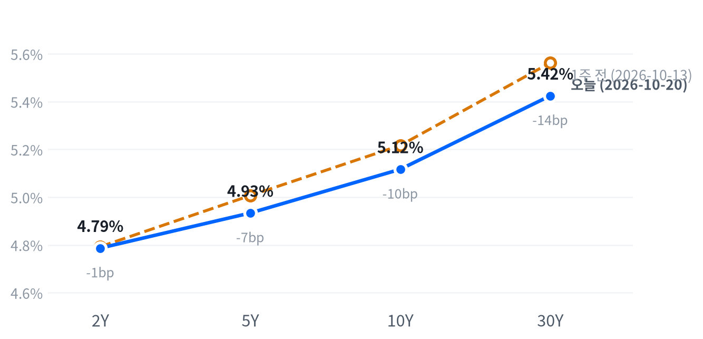

대형 기술주가 쉬는 사이 헬스케어·금융·부동산과 소형주가 지수를 끌어올렸다. 장중에는 미-이란 중재안 보도로 유가가 급락했다가 이란의 부인 뒤 되돌아왔고, 부진한 주택 지표에 장기물 금리만 내렸다.
헬스케어 신고가는 AI 관련주에서 빠진 자금의 반대편일 가능성이 커, 독립 추세로 보기는 이르다고 판단한다. 10월 21일 장 마감 뒤 메타 실적에 AI 관련주가 어떻게 반응하는지가 다음 확인 자료다.
이날 시장은 대형 기술주 대신 헬스케어와 소형주가 끌었다. 헬스케어 업종이 2.37% 올라 사상 최고치를 썼고, 러셀2000이 1.65% 오르는 동안 나스닥은 제자리였다. AI 인프라 다섯 종목은 다시 시장보다 약했다. 장중에는 카타르·파키스탄의 미-이란 중재안 보도로 유가가 급락했다가 이란이 합의 임박설을 부인하자 되돌아왔다.
헬스케어 신고가는 상당 부분 AI 관련주에서 빠진 자금의 반대편이라고 본다. 최근 20세션 동안 AI 인프라가 시장과 크게 벌어진 날마다 헬스케어는 예외 없이 반대 방향으로 움직였다. AI 구축 자금 조달 비용에 흔들린 투자자가 방어 업종으로 옮겨 갔다는 보도도 같은 해석이다. 가장 강한 반론은 업종 고유 재료다. 릴리는 10월 29일 실적을, 모더나는 10월 24일 흑색종 3상 전체 결과 발표를 앞두고 있고, 주택 지표 부진도 방어주 선호를 키울 수 있다. 업종 간 자금 흐름을 잰 자료가 없어, 시장이 이 순환을 얼마나 오래 갈 흐름으로 보는지는 알 수 없다.
헬스케어를 3개월 테마로 검토한다면 이날의 사상 최고치만으로는 독립 추세의 근거가 약하다고 판단한다. AI 쪽 재료가 좋아지면 같은 자금이 되돌아갈 수 있기 때문이다. 헬스케어 업종의 상대 강세에 대한 판단은 10월 21일 장 마감 뒤 메타 실적에 AI 관련주가 반응하는 것을 본 뒤로 미룬다. 업종 ETF로 상대 성과를 보면 릴리 실적·모더나 임상 같은 개별 종목 사건이 함께 섞인다는 한계도 있다. 소형주 강세는 확인되지 않은 중재안과 유가 헤드라인에 기댄 움직임이라 지속성을 판단할 근거가 아직 없다.
10월 21일 09:30(ET)부터 27일 16:00(ET)까지 종가 기준으로, AI 인프라 다섯 종목(마벨·코히런트·루멘텀·GE 버노바·버티브) 단순평균 등락률에서 S&P 등락률을 뺀 값이 +1.5%p 이상인 세션을 고른다. 그 세션들에서 헬스케어(XLV) 등락률에서 S&P 등락률을 뺀 값의 평균이 -0.5%p 이하이면 이 판단이 지지된다. +0.5%p 이상이면 판단이 약해지고 독립 재료 설명을 우선 설명으로 본다. 그 사이이거나 해당 세션이 없으면 결론을 내지 않고, 헬스케어 상위 종목의 실적·임상·약가 정책 발표가 겹친 세션은 뺀다. 다음 분기점은 10월 21일 메타·테슬라 실적, 22일 웨스턴디지털 실적, 28일 FOMC다.
출처: Reuters
| 지수 | 종가 | 등락률 | 기준일 |
|---|---|---|---|
| 닛케이225 | 64,916.70 | -0.62% | 10월 19일 |
| 항셍 | 24,186.83 | +0.52% | 10월 16일 |
| 상해종합 | 3,730.92 | +0.39% | 10월 19일 |
| DAX | 25,319.77 | -1.18% | 10월 19일 |
| FTSE100 | 10,733.00 | -0.29% | 10월 20일 |
| 유로스톡스50 | 6,144.81 | -0.96% | 10월 19일 |
| VIX | 17.31 | -6.13% | 10월 20일 |
항셍은 들어온 마지막 종가인 10월 16일 값, FTSE100과 VIX는 10월 20일 값이고 나머지는 10월 19일 값이다.
유럽은 미국과 엇갈렸다. DAX가 1.18%, 유로스톡스50이 0.96% 내리는 등 세 지수가 평균 0.81% 내렸지만 미국은 올랐다. 아시아는 평균 0.10% 오른 보합이었고, 닛케이가 0.62% 내리는 동안 항셍과 상해종합은 올라 지역 안에서도 갈렸다.
야간 선물은 저녁에 고점을 찍고 아침에 밀렸다. S&P 선물(ES)은 23:00(ET) 7,753가 고점, 08:00 7,705이 저점이었고, 나스닥 선물(NQ)은 08:30 29,479까지 내렸다. 그 시각에 9월 주택착공이 예상보다 크게 줄었다는 발표가 나왔고, 엔비디아·브로드컴 등 반도체가 장전부터 약했다. 현물은 S&P -0.15%, 나스닥 -0.41%의 갭으로 하락 출발했고 러셀2000만 보합(+0.01%)으로 열렸다.
평균적인 종목은 지수보다 잘했다. 동일가중 S&P에서 시총가중 지수를 뺀 수익률 차이가 +0.82%p로, 참여도는 고르게 오름 쪽이었다. S&P·나스닥·러셀2000 세 지수 모두 하루 범위의 중간에서 끝났다.
저점권·고점권 경계는 최근 2,253거래일의 일간 종가 위치 이력으로 다시 잰 기준이다.
유가 헤드라인이 장중 방향을 정했다. 10:30(ET) 무렵 카타르·파키스탄 중재안 보도가 퍼지며 유가가 그날 저점으로 밀렸고, 같은 시각 S&P와 나스닥이 고점을 찍었다. 이후 이란이 합의 임박설을 부인하자 유가가 되올랐고 나스닥은 상승분을 내줬다. 같은 구간에 10:00 미결주택매매 발표도 있어, 고점의 원인을 유가 헤드라인 하나로 특정할 수는 없다. 장 마감 뒤에는 넷플릭스가 광고 매출 전망을 낮춰 시간외에서 약 6% 내렸고, United Airlines는 연료 단가 상승을 이유로 4분기 이익 전망을 시장 예상보다 낮게 내놨다.
출처: Investing.com, CNBC, Sunday Guardian
| 지수 | 종가 | 등락률 |
|---|---|---|
| 러셀2000 | 2,773.42 | +1.65% |
| 다우존스 | 52,495.88 | +1.02% |
| S&P500 가치주 | 237.20 | +0.87% |
| S&P500 | 7,712.57 | +0.28% |
| 나스닥 | 26,424.82 | -0.02% |
| S&P500 성장주 | 139.95 | -0.19% |
| 섹터 | 등락률 |
|---|---|
| 헬스케어 | +2.37% |
| 부동산 | +1.70% |
| 유틸리티 | +1.26% |
| 금융 | +1.20% |
| 경기소비재 | +0.91% |
| 필수소비재 | +0.62% |
| 소재 | +0.55% |
| 에너지 | +0.25% |
| 커뮤니케이션서비스 | +0.09% |
| 산업재 | +0.07% |
| 기술 | -0.28% |
헬스케어 사상 최고치와 소형주 강세 속에 S&P500은 0.28% 오른 7,713으로 마감했다. 최근 2년(504거래일) 가운데 이보다 높았던 날이 25일뿐인 자리이고, 하루 움직임은 평소의 절반에도 못 미쳤다. 다우는 1.02% 오른 52,496, 러셀2000은 2,773으로 끝났고 나스닥은 26,425로 보합이었다. 가치주가 0.87% 오르고 성장주가 0.19% 내려, 한 주 내내 이어진 성장주 쏠림과는 반대 모양이었다.
러셀2000은 평소보다 크게 움직였고, S&P500보다 1.37%p 앞서 최근 20세션 가운데 가장 크게 이겼다. 소형주를 직접 설명한 보도는 합의 헤드라인이 유가를 흔든 날 다우와 소형주가 앞섰다는 정리 하나뿐이다. 러셀2000은 시가가 그날 저점이었고, 유가가 저점을 찍은 직후 시가 대비 2.01% 높은 고점까지 올라 그 부근을 마감까지 지켰다. 그러나 종가 기준으로 10년물 금리는 1.9bp, WTI는 0.12% 움직이는 데 그쳐 금리·유가 변화만으로는 폭이 설명되지 않는다. 같은 기간 소형주의 상대 성과는 10년물 금리 변화나 AI 관련주 성과와 뚜렷한 관계가 없어, 원인은 확인되지 않은 채로 둔다.
나스닥은 장중 흐름이 달랐다. 개장 직후 저점에서 10:30(ET) 무렵 시가보다 1.06% 높은 26,599까지 올랐다가 상승분 대부분을 내줬다. 유가가 되오른 뒤 대형 기술주만 힘을 잃었다.
지수 상승은 헬스케어·금융·경기소비재가 만들었다. 추정 기여도로 헬스케어가 0.23%p, 금융이 0.13%p, 경기소비재가 0.12%p를 보탰고, 기술은 0.09%p를 덜어냈다. 업종 합으로 설명되지 않는 부분은 -0.20%p다. 실적도 업종을 골랐다. 3M은 예상을 넘는 실적과 연간 가이던스 상향으로 다우를 끌어올렸고, GM은 3분기 이익이 예상을 넘었는데도 연간 조정 EPS 가이던스 범위가 애널리스트 중간값을 밑돌아 급락했다.
추정 기여도는 업종 비중을 직접 받지 않아, 최근 252거래일 지수·업종 수익률로 추정한 비중을 곱한 값이다. 소재와 부동산은 비중을 추정할 수 없어 빠졌다. 러셀2000의 하루 움직임은 최근 60거래일 평균 하루 변동폭의 1.87배다.
참여도가 고르고 VIX가 6.13% 내려 상승 자체는 믿을 만하지만, AI 하드웨어를 비켜 간 상승이라 위험선호의 회복보다 AI 관련주 밖으로 자금이 넓게 옮겨 간 결과로 본다.
출처: investingLive, CNBC, Benzinga
| 만기 | 종가(10월 20일) | 전일比(bp) | 1주 전(10월 13일) | 주간 변화(bp) |
|---|---|---|---|---|
| 2Y | 4.787% | +2.6 | 4.793% | -0.6 |
| 5Y | 4.934% | +0.5 | 5.007% | -7.3 |
| 10Y | 5.117% | -1.9 | 5.217% | -10.0 |
| 30Y | 5.425% | -4.8 | 5.563% | -13.8 |
주택 지표 부진에 장기물 금리만 내렸다. 30년물은 4.8bp 내린 5.425%, 10년물은 1.9bp 내린 5.117%로, 10년물은 최근 2년(504거래일) 가운데 이보다 높았던 날이 16일뿐인 고점권에 머물렀다. 2년물은 오히려 2.6bp 올라 4.787%가 됐다.

네이버 국채 종가, 전 만기 10월 20일 기준. 1주 전(10월 13일)과 비교하면 30년물이 가장 크게 내리고 2년물은 거의 그대로라, 장기물이 이끈 불 플래트닝이다.
하루로 보면 단기물이 오르고 장기물이 내린 플래트닝이다. 2s10s는 33.0bp, 5s30s는 49.1bp로 좁아졌다. 한 주 단위로도 장기물 하락 폭이 훨씬 커 평탄화가 이어졌다.
장기물을 끌어내린 것은 주택 지표다. 9월 주택착공은 연율 122.1만 호로 5.2% 줄어 컨센서스를 크게 밑돌았고, 단독주택 허가는 2023년 3월 이후 가장 낮았다. 9월 미결주택매매는 전월보다 7.3% 줄어 예상(-0.6%)보다 훨씬 나빴고, 2001년 집계 이래 최저였다. 성장 기대가 꺾이며 장기물이 내린 반면, 12월 인상 기대를 담은 2년물은 밀리지 않았다. 인상 기대는 그대로인 채 장기 성장 기대만 약해진 모양이다. 유가가 오후에 되오르자 금리도 저점에서 올라왔다는 마감 정리가 나왔다.
명목금리를 실질금리와 기대인플레로 나눈 최신 자료는 10월 19일 기준이다. 그날 10년물 6bp 상승은 전부 실질금리 몫이었고, 5거래일로는 9bp 하락이 실질금리 11bp 하락과 기대인플레 2bp 상승으로 나뉜다. 이날 10년 기대인플레는 2.35%로 변하지 않아, 이날 장기물 하락도 실질금리 쪽에서 나왔을 여지가 있다. 이날 실질금리가 갱신되면 확인된다.
신용시장은 지난주 넓어진 자리에서 멈췄다. 하이일드 스프레드는 10월 19일 3.29%로 하루 2bp 좁아졌지만 5거래일 사이로는 18bp 넓어진 상태이고, 투자등급 스프레드는 0.87%였다.
5년 뒤 5년 명목금리 5.36%, 실질 3.04%(10월 19일 기준). 기대인플레 쪽 수치와의 교차검증은 할 수 없었고, 위험 프리미엄이 섞인 값이다.
출처: MortgagePoint, CNBC
| 통화쌍 | 종가 | 등락률 | 기준일 |
|---|---|---|---|
| DXY | 101.725 | -0.26% | 10월 20일 |
| USD/KRW | 1,325.76 | -0.47% | 10월 20일 |
| USD/JPY | 158.257 | -0.18% | 10월 20일 |
| EUR/USD | 1.1238 | +0.21% | 10월 20일 |
달러는 중동 합의 헤드라인에 약해졌다. 달러지수는 0.26% 내린 101.725, 유로/달러는 0.21% 오른 1.1238이었다. 원/달러는 0.47% 내린 1,326원으로 비교 기간을 통틀어 가장 낮은 자리까지 내려왔고, 엔/달러는 0.18% 내린 158.257엔이었다.
달러를 끌어내린 것은 금리차가 아니라 유가와 위험선호 쪽 재료라고 본다. 2년물 금리가 2.6bp 올라 금리차는 오히려 달러에 유리했다. 엔/달러는 유가가 저점을 찍은 10:30(ET) 무렵 157.82엔으로 그날 저점을 찍었고, 합의 헤드라인이 유가를 흔든 날 달러가 내렸다는 마감 정리가 나왔다. 원화는 같은 날 서울에서 코스피가 3.73% 급락하고 외국인이 순매도했는데도 뉴욕 시간에 강해졌고, 그 이유는 확인되지 않았다.
원/달러의 위치는 최근 2년(504거래일) 종가 기준이다. 환율은 뉴욕 16:00 ET 가격, 전 거래일 같은 시각 대비다.
출처: investingLive, DigitalToday
| 품목 | 종가 | 등락률 |
|---|---|---|
| WTI | $98.24 | -0.12% |
| Brent | $109.19 | -0.15% |
| 천연가스 | $3.008 | -1.18% |
| 금 | $4,138.70 | -0.55% |
유가는 하루 사이 크게 흔들렸지만 종가로는 거의 제자리였다. WTI는 0.12% 내린 98.24달러로 이보다 높았던 날이 32일뿐인 높은 수준을 지켰고, 브렌트는 0.15% 내린 109.19달러였다. 장중에는 시가보다 3.39% 낮은 95.25달러까지 밀렸다가 마감 전에 대부분 되찾았다. 천연가스는 1.18%, 금은 0.55% 내렸다.
장중 급락은 카타르·파키스탄이 미-이란 협상 재개 절충안을 내놓았다는 보도에서 나왔다. 동결된 이란 자금의 이자 60억 달러 해제와 IAEA 비공개 사찰이 담긴 안이었다. 그러나 이란은 합의가 가깝다는 보도를 부인했고, 협상에 관여한 외교관도 임박설을 반박했다는 보도가 나오자 유가는 97달러 위로 되올랐다. 공급 쪽 불안은 그대로다. 영국은 후티의 사우디 공격에 대응해 타이푼 전투기를 방어 임무로 배치한다고 발표했고, Kpler는 최근 2주 사이 최소 18척이 공격받았다고 집계했다.
브렌트가 WTI보다 조금 덜 내려 두 유종의 가격 차는 10.95달러로 전일(10.99달러)과 비슷했다. 금은 장기물 금리가 내리고 달러가 약해진 날에도 내려, 평소 금리·달러와 반대로 움직이던 관계와 어긋났다. 10:30(ET) 무렵 그날 고점을 찍은 뒤 밀렸는데, 중재안 보도로 지정학 헤지 수요가 줄었는지는 확인되지 않았다.
WTI의 위치는 최근 2년(504거래일) 종가 기준이다. 원자재·환율은 뉴욕 16:00 ET 가격, 전 거래일 같은 시각 대비다. 결제가와 다를 수 있다.
출처: Al-Araby Al-Jadeed, Channel 12, Bloomberg, Investing.com, CNBC
미국 경기 국면은 성장 보합·물가 교착인 교착을 10월 14일부터 5영업일째 유지한다. 이날 나온 9월 주택착공과 미결주택매매는 국면 판단에 쓰는 지표 묶음 밖이라, 새 발표가 없는 날과 같이 국면이 움직일 수 없다. 성장 점수 0.043과 물가 점수 0.017은 둘 다 어느 쪽으로도 기울 만큼은 아니다. 두 주택 지표는 생산·활동 축의 악화 판정과 같은 방향이고, 성장 좌표는 11월 6일 10월 고용이 다시 점검한다.
| 지표 | Actual | Forecast | Previous | 발표일 | 컨센 대비 | 직전 대비 | 추세 |
|---|---|---|---|---|---|---|---|
| 구인건수(8월) | 7,079K | — | 7,335K | 2026-08 기준월 | 악화 | 악화(미미) · 3개월 평균 7,336K → 7,199K | |
| 신규 실업수당 청구 | 199,000 | 200,000 | 198,000 | 2026-10-15 (10월 10일 주간) | 하회▼ | 악화 | 개선(완만) · 4주 평균 204K → 198K |
| 신규 청구 4주 평균 | 198,500 | — | 198,250 | 2026-10-15 (10월 10일 주간) | 악화 | 개선(완만) · 4주 평균 206K → 200K | |
| 계속 실업수당 청구 | 1,710,000 | — | 1,714,000 | 2026-10-15 (10월 3일 주간) | 개선 | 개선(뚜렷) · 4주 평균 1,757K → 1,709K | |
| 비농업 고용 변화(9월) | +29K | — | +133K | 2026-09 기준월 | 악화 | 악화(미미) · 3개월 평균 +81K → +51K | |
| 실업률(9월) | 4.2% | — | 4.1% | 2026-09 기준월 | 악화 | 개선(미미) · 3개월 평균 4.27% → 4.13% | |
| 평균시간당임금 MoM(9월) | +0.13% | — | +0.32% | 2026-09 기준월 | 악화 | 악화(미미) · 3개월 평균 +0.21% → +0.19% |
| 지표 | Actual | Forecast | Previous | 발표일 | 컨센 대비 | 직전 대비 | 추세 |
|---|---|---|---|---|---|---|---|
| 산업생산 MoM(9월) | +0.66% | — | +0.06% | 2026-10-16 | 개선 | 보합 · 3개월 평균 +0.40% → +0.32% | |
| 내구재주문 MoM(8월) | -0.07% | — | +0.87% | 2026-08 기준월 | 악화 | 악화(완만) · 3개월 평균 +1.95% → +0.46% | |
| 신규주택판매(8월) | 684K | — | 643K | 2026-08 기준월 | 개선 | 개선(미미) · 3개월 평균 645K → 666K | |
| 기존주택판매(9월) | 399만 | 396만 | 393만 | 2026-10-13 | 상회▲ | 개선 | 악화(뚜렷) · 3개월 평균 4,120K → 3,993K |
| 실질GDP QoQ 연율(2분기) | +2.2% | — | +2.5% | 2026년 2분기 기준 | 악화 | — | |
| 주택착공 연율(9월, 보도 기준) | 122.1만 | — | — | 2026-10-20 | — | — | |
| 미결주택매매 MoM(9월, 보도 기준) | -7.3% | -0.6% | — | 2026-10-20 | 하회▼ | — | — |
| 지표 | Actual | Forecast | Previous | 발표일 | 컨센 대비 | 직전 대비 | 추세 |
|---|---|---|---|---|---|---|---|
| 소매판매 MoM(9월) | +0.77% | 0.3% | +1.29% | 2026-10-15 | 상회▲ | 악화 | 보합 · 3개월 평균 +0.61% → +0.55% |
| 미시간대 소비자심리(8월) | 51.7 | — | 55.2 | 2026-08 기준월 | 악화 | 개선(미미) · 3개월 평균 49.3 → 52.1 |
| 지표 | Actual | Forecast | Previous | 발표일 | 컨센 대비 | 직전 대비 | 추세 |
|---|---|---|---|---|---|---|---|
| CPI YoY(9월) | 3.72% | 3.6% | 3.35% | 2026-10-14 | 상회▲ | 상승 | 둔화(미미) · 3개월 평균 3.80% → 3.46% |
| CPI MoM(9월) | +0.65% | 0.6% | +0.40% | 2026-10-14 | 상회▲ | 상승 | 재가속(완만) · 3개월 평균 +0.23% → +0.37% |
| Core CPI YoY(9월) | 2.57% | 2.5% | 2.45% | 2026-10-14 | 상회▲ | 상승 | 둔화(미미) · 3개월 평균 2.71% → 2.49% |
| Core CPI MoM(9월) | +0.33% | 0.2% | +0.29% | 2026-10-14 | 상회▲ | 상승 | 재가속(완만) · 3개월 평균 +0.19% → +0.28% |
| PPI 최종수요 MoM(9월) | +1.34% | 0.6% | +0.47% | 2026-10-15 | 상회▲ | 상승 | 재가속(완만) · 3개월 평균 +0.49% → +0.66% |
| PCE 물가 YoY(8월) | 3.42% | — | 3.36% | 2026-08 기준월 | 상승 | 둔화(미미) · 3개월 평균 3.59% → 3.41% | |
| Core PCE YoY(8월) | 3.01% | — | 2.98% | 2026-08 기준월 | 상승 | 둔화(미미) · 3개월 평균 3.12% → 3.01% | |
| 미시간대 1년 기대인플레(8월) | 4.0% | — | 4.2% | 2026-08 기준월 | 하락 | 교착 · 3개월 평균 4.43% → 4.27% |
직전 대비는 Actual을 Previous와 비교한 것이고, 추세는 최근 3개월 평균을 그 앞 3개월 평균과 비교한 것입니다(주간 실업수당 청구는 4주 평균끼리). 추세의 세기는 그 지표가 평소 움직이는 폭에 견준 크기이고, 작은 변화는 보합으로 봅니다. 분기 지표인 GDP는 두 비교가 같은 숫자를 보므로 직전 대비만 싣습니다.
연준의 다음 금리 변경은 12월 9일 FOMC의 25bp 추가 인상이라는 판단을 유지한다. CME FedWatch 기준 10월 27~28일 FOMC 인상 확률은 17.2%로 전일(18.8%)과 1주 전(22.1%)보다 낮아졌고, 12월 회의까지 인상할 확률은 집계처에 따라 약 89~90%다. 주택 지표가 부진했는데도 2년물 금리가 올라, 시장은 12월 인상 기대를 거두지 않았다. 10월 회의 확률의 변화 폭도 작아 시점을 바꿀 이유가 없다.
10월 27일 FOMC 회의 전까지 CME FedWatch 10월 인상 확률이 장 마감 무렵 기준으로 과반에 올라서면 시점을 10월로 당긴다. 11월 6일 10월 고용에서 실업률이 3월 이후 범위(4.1~4.3%) 위로 올라서면 인상 우위 판단을 철회한다.
자산별 전달경로는 전일과 같다. 국면과 정책 경로가 그대로라 방향을 바꿀 근거가 들어오지 않았다.
출처: TipRanks, Southeast AgNET
| 지수 | 순위(5거래일 전) | 1개월 | 3개월 | SPY 대비 3개월 | 대비 변화 | 12-1 모멘텀 | 변동성 | 1일 VaR 95% | 베타 | 50/200일선 | 52주 고점 대비 |
|---|---|---|---|---|---|---|---|---|---|---|---|
| 소프트웨어 IGV | 1(2) | -0.2% | +20.1% | +17.0%p | +2.2%p | -4.9% | 33.8% | 2.6% | 1.78 | 위/위 | -8.7% |
| 에너지 XLE | 2(1) | +8.8% | +15.5% | +12.3%p | -4.0%p | +49.4% | 21.4% | 1.7% | -0.66 | 위/위 | -0.4% |
| 초대형주 Top 50 XLG | 7(4) | -1.5% | +3.7% | +0.5%p | -0.4%p | +12.7% | 13.4% | 0.9% | 1.18 | 위/위 | -2.5% |
| 경기소비재 XLY | 9(18) | +2.9% | +1.5% | -1.6%p | +5.5%p | -3.5% | 16.9% | 1.5% | 1.00 | 위/위 | -6.7% |
| 금융 XLF | 10(14) | -0.3% | -0.2% | -3.4%p | +2.7%p | +8.8% | 12.7% | 1.4% | 0.60 | 아래/위 | -4.5% |
| 금속·광업 XME | 14(9) | -7.9% | -3.0% | -6.1%p | -3.4%p | +6.9% | 35.6% | 3.7% | 1.98 | 아래/아래 | -24.4% |
| 모멘텀 팩터 MTUM | 16(10) | -6.5% | -5.7% | -8.8%p | -5.8%p | +25.9% | 25.2% | 2.8% | 1.55 | 아래/위 | -14.1% |
| 소형주 IWM | 17(20) | -3.4% | -5.9% | -9.0%p | +0.5%p | +18.5% | 14.4% | 1.6% | 1.04 | 아래/아래 | -9.4% |
| 산업재 XLI | 18(19) | -1.9% | -6.5% | -9.6%p | -0.2%p | +13.3% | 14.8% | 1.5% | 0.93 | 아래/아래 | -10.3% |
| 은행 KBE | 19(23) | -2.6% | -6.6% | -9.8%p | +2.6%p | +21.1% | 14.9% | 1.4% | 0.54 | 아래/위 | -9.7% |
| 전력망 GRID | 20(13) | -7.1% | -6.8% | -9.9%p | -4.9%p | +18.2% | 25.2% | 2.7% | 1.61 | 아래/아래 | -15.5% |
| 반도체·AI 하드웨어 SMH | 21(12) | -8.3% | -6.9% | -10.1%p | -6.3%p | +74.4% | 36.6% | 4.0% | 2.31 | 아래/위 | -18.3% |
| 소형 성장 IWO | 22(22) | -4.5% | -7.2% | -10.4%p | +1.1%p | +13.2% | 19.0% | 2.1% | 1.38 | 아래/아래 | -11.8% |
| 주택건설 XHB | 24(24) | -0.8% | -9.5% | -12.7%p | +3.3%p | -9.0% | 25.5% | 2.4% | 1.41 | 아래/아래 | -19.9% |
| 방산 ITA | 25(25) | -4.6% | -10.7% | -13.8%p | +3.1%p | +5.2% | 18.9% | 2.2% | 0.89 | 아래/아래 | -18.5% |
| 지수 | 순위(5거래일 전) | 1개월 | 3개월 | SPY 대비 3개월 | 대비 변화 | 12-1 모멘텀 | 변동성 | 1일 VaR 95% | 베타 | 50/200일선 | 52주 고점 대비 |
|---|---|---|---|---|---|---|---|---|---|---|---|
| 헬스케어 XLV | 3(3) | +6.4% | +13.2% | +10.1%p | +5.8%p | +19.9% | 17.8% | 1.4% | 0.09 | 위/위 | 0.0% |
| 배당 SCHD | 4(6) | +3.7% | +6.3% | +3.1%p | +2.5%p | +29.2% | 11.0% | 1.0% | 0.15 | 위/위 | -0.7% |
| 필수소비재 XLP | 5(8) | +7.1% | +4.7% | +1.5%p | +3.3%p | +5.6% | 14.7% | 1.4% | -0.15 | 위/위 | -0.6% |
| 퀄리티 팩터 QUAL | 6(7) | +1.2% | +4.1% | +0.9%p | +0.7%p | +16.3% | 9.3% | 0.8% | 0.78 | 위/위 | -0.9% |
| 저변동성 SPLV | 11(15) | +3.5% | -1.6% | -4.8%p | +1.3%p | +1.6% | 9.6% | 1.0% | 0.05 | 위/위 | -3.8% |
| 유틸리티 XLU | 23(21) | +3.0% | -8.2% | -11.3%p | -1.2%p | -8.7% | 15.1% | 1.4% | 0.22 | 위/아래 | -10.4% |
| 지수 | 순위(5거래일 전) | 1개월 | 3개월 | SPY 대비 3개월 | 대비 변화 | 12-1 모멘텀 | 변동성 | 1일 VaR 95% | 베타 | 50/200일선 | 52주 고점 대비 |
|---|---|---|---|---|---|---|---|---|---|---|---|
| 일본 EWJ | 8(5) | -2.6% | +3.5% | +0.4%p | -0.4%p | +24.6% | 18.6% | 1.5% | 1.17 | 아래/위 | -3.9% |
| 유럽 VGK | 12(16) | -2.3% | -1.9% | -5.0%p | +1.2%p | +13.8% | 12.1% | 1.2% | 0.70 | 아래/위 | -6.2% |
| 신흥국 EEM | 13(11) | -8.0% | -2.6% | -5.7%p | -2.6%p | +29.5% | 22.0% | 2.1% | 1.46 | 아래/아래 | -11.1% |
| 중국 MCHI | 15(17) | -5.6% | -4.9% | -8.0%p | -1.0%p | -13.1% | 15.1% | 1.7% | 0.50 | 아래/아래 | -20.8% |
| 지수 | 순위(5거래일 전) | 1개월 | 3개월 | SPY 대비 3개월 | 대비 변화 | 12-1 모멘텀 | 변동성 | 1일 VaR 95% | 베타 | 50/200일선 | 52주 고점 대비 |
|---|---|---|---|---|---|---|---|---|---|---|---|
| S&P 500 SPY | – | -0.6% | +3.1% | 0.0%p | – | +17.7% | 10.9% | 0.8% | 1.00 | 위/위 | -1.3% |
| S&P 500 동일가중 RSP | – | +1.5% | +1.9% | -1.3%p | – | +14.9% | 10.3% | 0.9% | 0.65 | 위/위 | -2.7% |
| 나스닥 100 QQQ | – | -3.2% | +1.9% | -1.3%p | – | +23.4% | 18.3% | 1.7% | 1.53 | 아래/위 | -5.5% |
가격 기준 시장 국면은 강세이고, 7월 31일 횡보에서 넘어온 뒤 57거래일째다. 전일까지 2거래일 동안 그날 조건이 횡보를 가리켰지만, 이날 SPY가 769.05로 50일선(767.26) 위로 돌아와 전환 없이 강세가 이어졌다. 52주 고점과의 거리는 1.29%라 단기 약세 조건과는 멀다.
반도체·AI 하드웨어의 3개월 상대수익률은 한 주 사이 크게 악화됐다. 순위가 12위에서 21위로 밀렸고, SPY 대비 3개월 상대수익률은 6.28%p 나빠진 -10.06%p다. 전력망도 13위에서 20위로 내려가 상대수익률이 4.94%p 줄어든 -9.93%p가 됐다. 반대로 헬스케어는 3위를 지키며 상대수익률이 5.81%p 개선된 +10.07%p로 올라섰고, 52주 고점에서 끝났다. AI 하드웨어와 헬스케어의 상대수익률이 한 주 사이 거의 같은 폭으로 반대로 움직여, 전략 코멘트의 자금 이동 해석과 같은 모양이다.
위험 지표는 엇갈렸다. VIX는 17.3으로 내려왔지만, 하이일드 스프레드는 10월 19일까지 5거래일 사이 18bp 넓어져 신용 부담은 남아 있다. 순유동성은 4주 사이 늘었고 금융여건지수는 조금 조여졌지만 평균보다 느슨해, 유동성 방향은 중립이다.
릴리(+3.49%)는 헬스케어 업종의 사상 최고치를 받친 종목이다. 장중 1,308달러로 사상 최고가를 썼고, 비만·당뇨 파이프라인 기대와 헬스케어 업종 순환이 이유로 거론됐다. 구체적인 신규 발표는 확인되지 않았고, 10월 29일 장 전 3분기 실적을 낸다.
모더나(+6.69%)는 10월 24일 ESMO 학회에서 키트루다 병용 흑색종 3상(INTerpath-001) 전체 결과를 발표하고 같은 날 투자자 웨비나를 연다는 기대에 올랐다. 10월 16일 차익실현으로 10% 급락한 뒤의 반등이고, 이날 신규 발표는 확인되지 않았다. 헬스케어 강세 가운데 일정 재료가 뚜렷한 종목이라, 업종 상대 성과를 볼 때 따로 떼어 봐야 한다.
애플(-1.00%)은 지수 기여 하위로 기술 업종 약세에 보탰다. Jefferies와 KeyBanc가 10월 19일 아이폰 18 Pro 수요 약세를 이유로 매도 의견을 냈고, 20일 장 전에는 Loop Capital이 투자 의견을 낮췄다는 보도가 나왔다. 메모리·부품 원가 상승에 따른 마진 우려도 거론됐다.
알파벳(-1.13%)도 지수 기여 하위였다. 확인된 재료 없음.
테슬라(+1.54%)는 경기소비재 업종의 상대 개선에 보탠 종목이다. 회사 고유의 재료는 확인되지 않았고, 10월 21일 장 마감 뒤 3분기 실적을 앞두고 있다.
출처: Grafa, Motley Fool, Reuters, Yahoo Finance, 24/7 Wall St., TipRanks, Invezz
헬스케어 사상 최고치를 AI 관련주에서 빠진 자금의 반대편으로 본 판단(10월 20일)의 출발점은 이날 헬스케어(XLV) 등락률에서 S&P 등락률을 뺀 +2.09%p, AI 인프라 다섯 종목 단순평균에서 S&P를 뺀 -0.95%p다. 10월 21일 09:30(ET)부터 27일 16:00(ET)까지 종가 기준으로, AI 인프라 다섯 종목(마벨·코히런트·루멘텀·GE 버노바·버티브) 단순평균 등락률에서 S&P 등락률을 뺀 값이 +1.5%p 이상인 세션을 고른다. 그 세션들에서 헬스케어(XLV) 등락률에서 S&P 등락률을 뺀 값의 평균이 -0.5%p 이하이면 이 판단이 지지되고, +0.5%p 이상이면 약해진다. 그 사이이거나 해당 세션이 없으면 결론을 내지 않고, 헬스케어 상위 종목의 실적·임상·약가 정책 발표가 겹친 세션은 뺀다. 모더나의 10월 24일 학회 발표는 26일 세션에 영향을 줄 수 있다. 하루 수익률을 그대로 비교해 두 업종의 변동성 차이는 보정하지 않았다.
지난주 AI 인프라 약세를 약한 차입자의 신용 문제로 보고 하이퍼스케일러 수요는 온전하다고 본 판단(10월 19일)은 확인을 앞두고 있다. 메타가 10월 21일 장 마감 뒤 2026년 설비투자 범위를 유지하거나 올리는 조건에서, 10월 22일 종가 기준 AI 인프라 다섯 종목 단순평균 등락률에서 S&P 등락률을 뺀 값이 +2.31%p 이상이면 지지되고 -2.31%p 이하면 약해진다. 이날 데이터센터주를 누른 악재 보도가 있었지만 확인 기준은 바뀌지 않는다.
HDD 2종의 추가 낙폭을 포지션 축소의 고베타 효과로 본 판단(10월 16일)은 실적 전이라 결론을 내지 않는다. 이날 웨스턴디지털이 3.44% 오르고 마이크론이 0.98% 내려, 10월 12일 종가 대비 누적으로는 웨스턴디지털 -5.85%, 마이크론 -9.40%로 웨스턴디지털이 3.55%p 앞섰다. 판단의 출발점이던 3.06%p 할인은 실적 전에 모두 되돌려졌고 반대편으로 넘어갔다. 시게이트는 같은 기간 -10.37%로 아직 마이크론보다 뒤처졌다. 확인 기준은 바꾸지 않는다. 웨스턴디지털 10월 22일 발표에서 수요 설명이 유지될 때, 23일 종가 기준 웨스턴디지털 1일 수익률에서 마이크론 1일 수익률을 뺀 값이 +3.06%p 이상이면 지지되고 0%p 이하면 약해진다. 할인이 이미 해소돼 실적 뒤 강세가 나와도 할인 해소의 증거로서 무게는 작다.
AI 인프라 급락을 신용·수익성 쪽 매도로 본 판단(10월 14일)은 이날 비교에 들지 않았다. 2년물 상승 폭(2.6bp)이 기준인 5bp에 못 미쳤기 때문이다. 10월 27일 종가까지 2년물이 5bp 이상 오른 세션마다 AI 인프라 다섯 종목 단순평균에서 S&P를 뺀 값을 재고, 그 평균이 -2.0%p보다 덜 나쁘면 지지된다.
AI 자본지출 랠리가 연준 인상 사이클과 따로 간다는 판단(9월 22일)은 결론을 계속 보류한다. 10월 19일 10년 실질금리가 6bp 올라 확인 조건이 처음 성립했고, 그날 유틸리티·부동산·금융이 내리는 동안 AI 인프라 다섯 종목은 평균 0.68% 올라 판단과 같은 방향이었다. 그러나 9월 말 금리 상승일에 AI 인프라가 함께 내린 사례를 하루로 뒤집지는 못한다. 이날의 반대 모양은 방어 업종 순환으로도 설명돼 금리 둔감의 증거로 쓰기 어렵다. 기한은 10월 28일 FOMC다.
통신 3사 급락을 장기 가격결정력의 재평가로 본 판단(10월 9일)은 유지한다. 통신 3사의 새 종가 자료가 없다. SpaceX가 이날 장 마감 뒤 커넥티비티 매출이 69% 늘었다는 3분기 실적을 냈고, 이것이 확인 시점 전 SpaceX 발표에 해당하는지는 10월 26일 07:00(ET) 베라이즌 3분기 실적일에 함께 판단한다.
출처: CNBC, Quartz
이 보고서의 시세는 Yahoo Finance와 네이버 국채 종가, 경제지표는 FRED와 각 발표 기관(BLS·BEA·Census 등), 그 밖의 내용은 본문에 밝힌 출처에서 가져왔다. 이 보고서는 투자 자문이 아니며 특정 자산의 매수·매도를 권유하지 않는다. 투자 판단과 그 결과에 대한 책임은 전적으로 투자자 본인에게 있다.